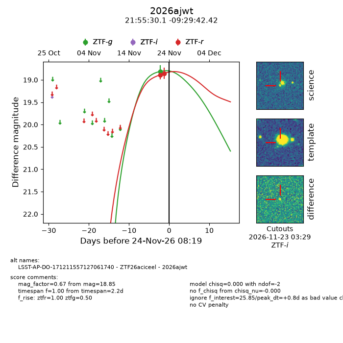
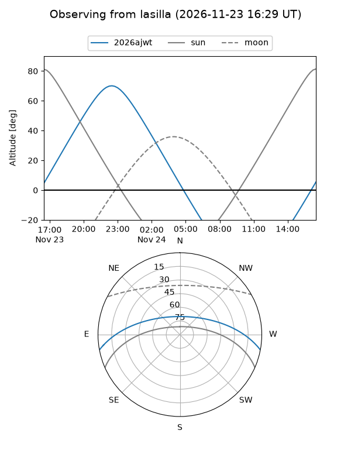
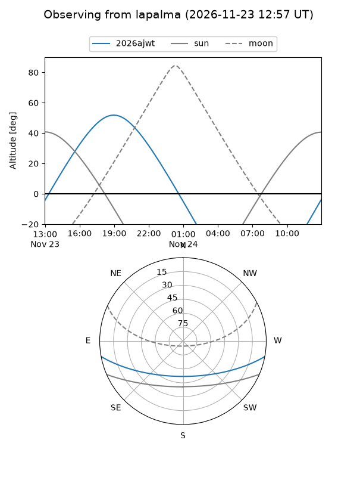
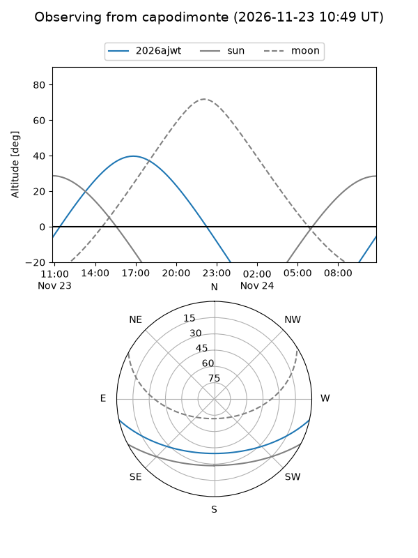
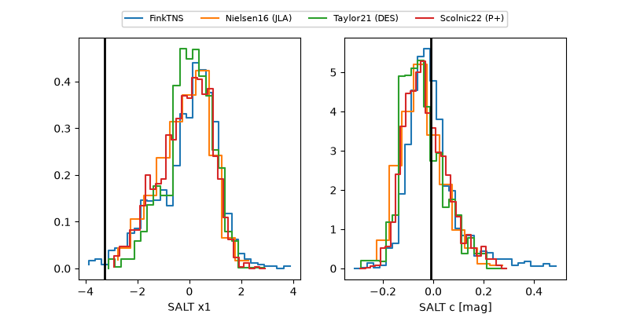

2026ajwt
Target 2026ajwt at 2026-11-24 08:21
Aliases and brokers:
FINK-ZTF: ztf.fink-portal.org/ZTF26aciceel
Lasair-ZTF: lasair-ztf.lsst.ac.uk/objects/ZTF26aciceel
ALeRCE-ZTF: alerce.online/object/ZTF26aciceel
YSE-PZ: ziggy.ucolick.org/yse/transient_detail/2026ajwt
TNS name: wis-tns.org/object/2026ajwt
Direct TNS query: direct search
alt names
ZTF26aciceel (ztf,fink_ztf)
2026ajwt (tns,yse)
LSST-AP-DO-171211557127061740 (iau_lsst)
Coordinates:
equatorial (ra, dec) = 328.8755,-9.49512
equatorial (HMS+DMS) = 21:55:30.11,-09:29:42.42
galactic (l, b) = (47.4042,-44.97707)
Flags:
peak dt: +0.8
Photometry:
last ztfg=18.81, ztfr=18.85
1 ztfg, 2 ztfr detections
Lightcurve

Visibility



Additional plots
